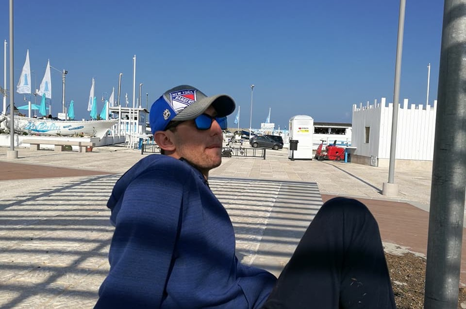

Chi sono
Ho imparato a respirare
trattenendo il respiro.
Mi chiamo Federico Paciotti, sono nato a Roma il 22 luglio 1990. Qui metto a disposizione le esperienze che mi hanno insegnato a essere l'uomo che sono oggi: le gare, i ricordi, gli affetti, ma anche le difficoltà, le cadute e i fallimenti.
Perché è da lì che si impara davvero: a non arrendersi mai alle avversità e a restare a testa alta ogni volta che la vita ti mette alla prova.
«Se questo racconto aiuta anche una sola persona a superare un ostacolo più grande di lei, allora ho scritto per un motivo.»


Le quattro correnti
Quattro modi di guardare la stessa vita.

La storia
Centocelle, via dei Castani, la nonna Eufemia, la scuola, il bullismo, la campagna. Da dove arrivo.
Leggi
Sport
Apnea, nuoto pinnato, corsa. Podi, medaglie, un ricovero e la voglia di ricominciare da capo.
Scopri
La terra
Zagarolo: albicocchi, limoni, mimose e querce. E poi Spillo, Romeo e Camilla.
Entra
Viaggi
Londra, le Alpi francesi, il Gran Sasso, gli Studios di Harry Potter, le Tremiti, la Sardegna.
Viaggia«Non arrendersi mai alle avversità della vita.»
Il filo che tiene insieme tutto

L'ultimo traguardo
Dai 50 metri in vasca
ai 2912 del Gran Sasso.
Ogni traguardo è arrivato con fatica, pazienza e soprattutto allenamento mentale. La montagna, come l'apnea, non si vince: si impara a starci dentro.
Libri e poesie
Una parte di questo sito resta riservata: i libri che ho scritto e le poesie che dedico ogni giorno a Evanna. Si entra con una chiave.